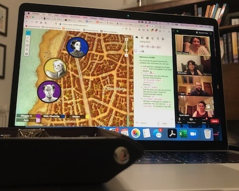
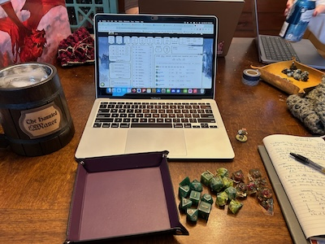
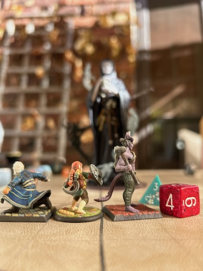
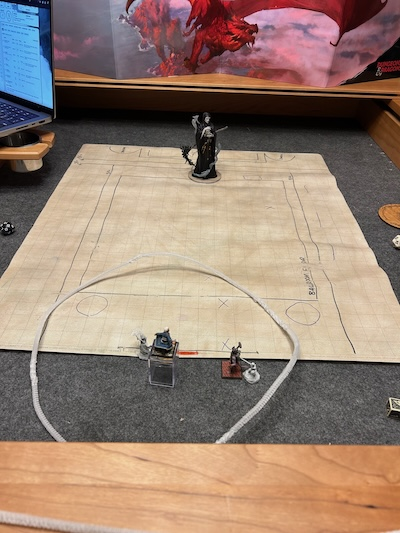
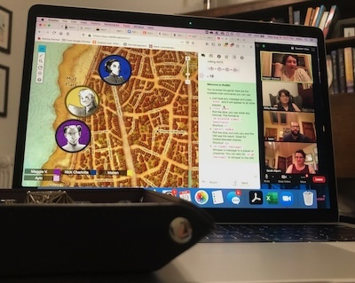
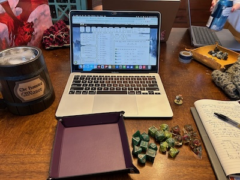
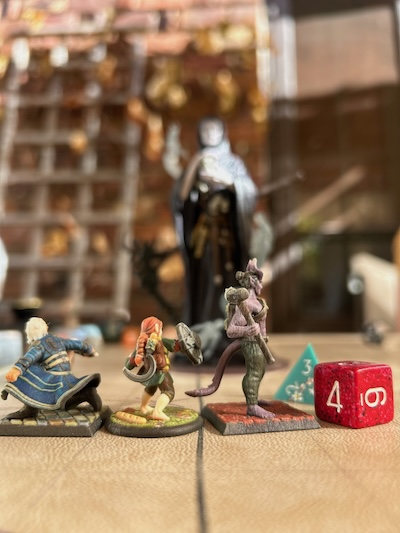
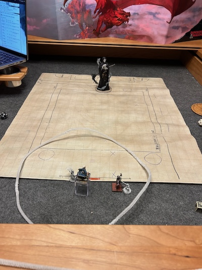

The Campaign So Far
Separated by level, from 1 to 17 (current level)
- Waterdeep Dragon Heist prewritten module. The party met in a bar called the Yawning Portal. We learned about two warring gangs in the city, the Zhentarim and the Xanathar Guild. Someone named Floon had been kidnapped, and we went down into the Xanathar Guild sewer lair to look for him. We ended up with the deed to a bar called Trollskull Manor.
- We went and checked out the bar, which we promptly renamed the Haunted Manor after the ghost living therein. We met some characters who would become important later on, including the druid Melanor and the fence Cheap Trixie. We learned that there had been a lot of recent attacks on people of elvish heritage. We investigated a mystery in some cornfields and explored the city's cemetery, the City of the Dead, to find out more about the elf attacks. We went to a carnival on board a boat and had a tarot reading done.
- Mairen's goddess gave her some tarot cards. There was an explosion outside our bar and we looked into what might have caused it, meeting with a guard-affiliated wizard named Blastwind to learn more. We link up with scion-in-disgrace Ranier Neverember, whose father stole a lot of money from the city. We find the drow who has been killing elves and hand him over to the Zhentarim.
- We discover something called the Stone of Galorr is involved in all of this, and it has a creature called an aboleth inside. We learn the explosion was caused by an automaton called a Nimblewright and meet another one, called Nim, who comes to live in our bar. We take a weird submarine into the harbor and learn there's a dragon down there. We patrol the City of the Dead at night and catch graverobbers.
- We learn from the aboleth where Ranier Neverember's father hid the city's fortune and track it down. We also learn about the existence of a family called the Cassalanters. After hiring some bagpipers, we find our way into a cavern under the city and manage to avoid a fight with a disguised dragon. We claim a reward for helping the city, and Nick is magically forced by Amalia Cassalanter to tell her where the gold was hidden.
- We are pulled into the Fey Realm by an archfey named LaRue, who has long been helping Ayin's family. There's a power dispute in this Realm and the deciding factor is going to be a race between champions of the three different powers. The other champions are a paladin named Colm and his two companions and a trio of sisters called the Vokloffs. We win the race. We also learn that Nick is starting to lose time while he's up alone on watches at night.
- We discover we were gone for two weeks, because time works differently in the feywild, and Nick reads some books he found that refer to a wizard named Malgali. We find our way to a secret magic item store called the Midnight Shop, run by a woman named Azara. We fight a follower of Malgali who is after a locked box we've been given. We learn the box is dangerous and send it to LaRue. We also go to a fight club.
- We travel to Mairen's town, Colsham, after she gets word that help is needed there. On the way, we stop in the city to our north, Lumenate, which has several universities. We go to the Deaf Leopard bar. When we get to Colsham, we learn there's a giant pit with a cave network underneath and a fungal blight affecting the town's crops. We go down into the pit, meet a few people in a tunnel network (Dirk, Clarla, and Azielo, the last of whom are drow), and fight a rot monster from the era of "ascendants," or mortals that ascended to godhood. Mairen encounters her goddess Yondalla and makes some peace with her powers.
- We learn that Nick is being possessed by Malgali. Nick and Malgali talk and we learn that Nick has died a few times, including once killing Malgali. We also learn that Nick's father knows Nick has died at least once and his having him watched. Blastwind asks us to help intervene in Waterdeep's gang war and Nick persuades Blastwind to give him a Ring of Invisibility. We go down into the Xanathar Guild's tunnels and defeat the boss. Ayin gets a familiar. Trixie asks us to bring a note to Azara. Nick's sister April is reportedly acting weird. We make plans to go to Malgali's castle, go back through Lumenate, and discover a part of the Fey Realm has been transposed to outside its gates. We learn about martinis at the Deaf Leopard and then go to the library, where we learn about soul jars and about planar transposition. We go down into the basement to find the mirror that prevents sleep and discover a dozen people are trapped inside of it due to someone called the Kind-Faced Gentleman. We travel to the Silver Grove, where Nick's mom Elsbet lives, learn a bit about Nick's childhood, and meet a man whose life Mairen once saved. Ayin obtains and uses a cursed belt. We go to Malgali's castle and fight our way to the top,, where we find one of his former students who has taken the soul gem and Malgali's body to try to restore Malgali. After a fight, the gem is destroyed. Nick is alive again... until Ayin picks a really reckless fight that gets him killed. I bring him back and we go home.
- Mairen is furious at Ayin for getting Nick killed and upset with Nick for not being upset enough about it. We partially work it out. We attend a summer festival. At the end of it, Amalia Cassalanter gives a speech and then suddenly plane-swaps a big chunk of Waterdeep with a big chunk of Hell. Ayin talks to LaRue and she explains she's expecting an invasion from the Hells, and they're punching holes through other realms to try to find their way to her. Yondalla brings Mairen and Nick to the Fey Realm to join Ayin and tells us times are dire. We need to find two halves of the key to the Hells to stop the invasion at its source. One piece is on Carabas, a casino island in the Cessabit Sea, and the other is in the drow city of Dosalea far underground. We go back to Nick's house and learn April was kidnapped and replaced with a changeling. Nick talks to an old army contact and we head out for Carabas. There, we go to the Casino of Cats. It's run by a human marquis and staffed by tabaxi. We explore the casino, discover the whereabouts of the missing Lord Neverember, get out of a dangerous gamble with a successful Divine Intervention, and get the key from a basement vault... although not without a near-altercation with the Prince of Cats, who turns into a dragon. We fight a Rakshasa and go home.
- We learn that Amalia and her husband are headed to the country of Gatorio in the east. We reach out to Dirk and Azielo and they meet us in the Underdark. (We also learn, separately, that April is fighting alongside automaton pirates?) On our way to Dosalea, we see a mechanical "boreworm" that bores through the ground creating tunnels. We reach out to Clarla in Dosalea and she tries to have us assassinate a priestess who is helping to drum up war against the elves who live on the surface. She says the priestess has the key we need. We stake out a church and get ready to do it, but discover the key isn't real, and decide we can't do an assassination. We learn Clarla lied to us about the key and we go get it. In the process, we kill Clarla with the boreworm.
- Time to go to the Hells. LaRue sends us a guide, Blythe, who is an annoying low-level young bard with a flute. We plane shift to Hell and run into the block of Waterdeep that was planeswapped. It's been fortified against demons. We help fight back and evacuate the Waterdevians. We go to Asmodeus's fortress and fight our way through, including against the Rakshasa we killed once already. When we get to Asmodeus's chamber where he slumbers, we go in guns blazing and have Blythe break the planeswap machine--but once we've won, it turns out that Blythe hasn't turned off the machine, he's made it worse. Blythe isn't Blythe. He's the Kind-Faced Gentleman.
- Mairen learns from a Legend Lore spell that Yondalla and the other gods were once human. "Blythe" was in her adventuring party. When the rest of them ascended to godhood, he stayed behind. The millennia have made him more and more of a force of chaos who meddles with Yondalla's followers for fun. After this, we go to rescue(?) April, who is working to help liberate the automaton pirates who kidnapped her from her original kidnappers. We travel there on the boat of May's love interest Enton. Nick trolls May. We meet a stowaway vampire named Diocles and help save his life. We buy an unbreakable arrow and a periapt of wound closure from a merman salesman. We catch up with the robot pirates and April, and we help them rescue a councilman of Gond who was kidnapped. We end up fighting a huge sea monster called Isonade (with the help of Ayin's unbreakable arrow) and winning the robots a platform to advocate for greater rights.
- May gets engaged! There's a time skip of three months ahead to get to her wedding. In those three months, we work on running the bar, take a trip to Vesperdon (an elf city now at war with the drow) where Mairen helps heal people and learns more about the gods. Nick avoids talking to his father. Ayin learns to make cocktails. We find Azara living in a magic tower inside our walls because she owes the Xanathar Guild and the Cat Casino both a lot of money, and we offer to help settle her debts in exchange for her help (and magically-enforced promise to stop gambling). We go to Vintas in pursuit of the still-on-the-lamb Lord Neverember and Ayin duels the man harboring him; finally he's captured. We attend May's wedding and fight a hag that her catty maid of honor best friend brought in to make trouble.
- We learn the Cassalanters are headed to Gatorio. On the way there is a beanstalk, at the top of which is a box of bones that Azara needs in order to get out of debt. We buy horses and ride through the elf-drow war zone to the beanstalk, which has an abandoned giant's castle at the top. We make our way through the castle and nearly get TPKed by a giant necromancer before teleporting home. It's deeply scary, but also shakes Mairen out of some unhealthy patterns. We spend a week at home and learn that the Cassalanters were in contact with three people in Gatorio. We recruit Colm and Azara to return to the beanstalk with us, and this time we win (and take home a lot of gold!)
- We go to Gatorio, pass through an empty town on the way there, and defeat the demons that were kidnapping its people, earning us cred with an army captain. When we get to the capital, Braque, we say hi to our old vampire firend and then investigate the three people the Cassalanters were in touch with. One is a general. We go to a royal party in disguise and end up fighting him to save the life of the regent prince's chief advisor. One is a socialite who runs a magic salon, who we're pretty sure has been replaced with a changeling. One is a priest who is letting a dragon into the city under a cathedral. We get the prince's permission to collapse the cathedral on the dragon and then fight the dragon.
- We continue on to a town further north in Gatorio where the Cassalanters are being sheltered by monks. We fight off bounty hunters who are there after the Cassalanters' children, who they made pacts to trade away, and then fight the Cassalanters themselves. We defeat them, but the Kind-Faced Gentleman spirits their children away.